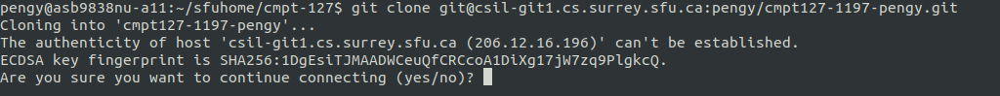

Log in, lab work flow, version control, command shell links
This lab is a primer for the work flow you will follow in all of your labs. Follow these instructions carefully.
Each lab will be split up into a sequence of Tasks. Do the tasks in order.
CSIL - Computing Science Instructional Lab - is open 24 hours a day, 7 days a week. This is to say that, this semester, the CSIL workstations are accessible 24/7. All the work you will do in CMPT 127 will be done using the CSIL workstations remotely.
Follow the instructions posted in Week 1 (part of your Homework) and remotely login to a CSIL workstation running Linux.
In order to log in to Linux remotely, and manipulate most of your work in this course, you will use a Terminal window which runs a shell.
This Terminal shell window is a text-based command-line interface. It allows you to type commands to
manipulate, run and
test programs you create as part of the CMPT 127 labs. But there will be no programming in this Lab 0.
In this lab, you are going to setup and use Git.
But before you get to Git, you need to learn some of the commands you can type in the terminal.
Let's start by reading one of the many beginner's guides to Linux commands: Beginner's guide to Linux commands. There are a few more very useful links in the Reading material section at the end of this lab.
Stop! We know that students skip over links! If you are new to Linux, you really need to read up on some basics. Read the Beginner's guide to Linux commands.
You can now move on to Git.
We never write code all at once, and entirely correctly the first time. We usually write some code, save it somewhere safe, then come back to it and modify it until we are done with our task. More importantly, we need to track our changes so that we can experiment with what works and what doesn't. In order to help us do these steps we use a source code version control system (or VCS, for short). The source code are our programs and version control system lets us manage all the changes we have made to our programs.
Throughout this course, your programs will be managed and archived using Git. The basic idea is as follows:
Go to the SFU GitLab server which is on the web at gitlab.cs.sfu.ca. Log in with your SFU username and password, the same username and password you used to log in this CSIL computer.
Once logged in, you will see a list of your existing repos. You probably have none right
now, so let's create one for CMPT 127 by clicking the New Project
button at the top right of the page, then click on the Create blank project large button.
On the New Project page, in the Project name
text field, give your repo the following name cmpt127-$SEMESTER-$USER.
It is important to name your project exactly as you see here.
Leave all other settings as they are.
Make sure your Visibility Level setting
is set to Private. Why?
Because your Git repo must be visible only to yourself.
In other words, no other student can access it by default.
You must not give access to your Git repo to any other students - plagiarism is a serious
academic offense, which applies as much to code as it
does to essays and exams.
Now, click the Create Project button at the bottom of the page.
Your Git repo has now been created. You will be taken to a web page for your newly created Git repo.
The grading robots and the course instructor need access to your Git repo in order to test
and grade your code. Add the grading robots and instructor as a member of your
repo's project by clicking on the Members option on the menu to the left.
This takes you to the Project members page where you can add and remove members to and from
your project and set their access privileges.
First, under the section Invite member,
add (copy and paste) the member instructor127 (grading robots) to the
GitLab member or Email address text field. Then select
Developer from the dropdown menu labelled
Choose a role permission and set the
Access expiration date to April 30.
Finally, click on the Invite button.
Repeat the above actions for the instructor alavergn.
You should now see these two members listed at the bottom of this web page in
the section called Existing members and groups.
Verify that these members have been properly added to your project.
Let's now set up your Git repo such that it calls the grading robots automatically when you commit code to your Git repo. To do so, follow these steps:
Settings icon on the menu to the left.Webhooks.URL enter (copy and paste): http://unit.csil.sfu.ca:5000/Add Webhook button near the bottom of the page.At the bottom of the page in the section called Project Hooks,
you should now be able to see the Webhook, i.e.,
the URL you have just entered. Verify that this URL has been properly entered.
This URL tells the GitLab server to send a message to this URL every
time you push code to your Git repo. Once the grading robot has received this message,
it will retrieve
your code, test it, and tell you the results (more on this later in this Lab 0).
Next you will set up the Secure Shell (ssh) keys so you can access your Git repo without a password. To do so, follow these steps:
Settings.SSH Keys option (the first key icon) on the menu to the left.ssh-keygen -t ed25519 -C "<comment>".
You can replace <comment> with your own SFU email address
username@sfu.ca (lower case). Make sure you do not erase the quotes.Enter:
Generating public/private ed25519 key pair. Enter file in which to save the key (/home/your_username/.ssh/id_ed25519):Accept the suggested path, i.e., "/home/your_username/.ssh/id_ed25519" by simply pressing the
Enter key.Enter passphrase (empty for no passphrase):You can skip creating a password by simply pressing the
Enter
as a response to the above instruction.Enter same passphrase again:And again, press
Enter.Your identification has been saved in /home/your_username/.ssh/id_ed25519. Your public key has been saved in /home/your_username/.ssh/id_ed25519.pub. The key fingerprint is: SHA256:F//wRTCENGLgnfrck7Rn0uJtYSw76dYdU22VMgNE7TM your_username@sfu.ca The key's randomart image is: +--[ED25519 256]--+ | ..===o+ .| | . o o.* +.| | . + . + +| | . o E .+| | S . +.o.o| | + o.B++ | | o B**oo| | .=Bo .| | ooo. | +----[SHA256]-----+This indicates that your SSH Key was successfully generated.
cat ~/.ssh/id_ed25519.pub
Key.cmpt127-$SEMESTER-CSIL
in the text field under the Title heading.Add key.SSH key
option on the menu to the left again to find yourself back at the SSH Keys web page.Your SSH Keys at the bottom of this SSH Keys web page.
Verify that your SSH Key has been properly entered.It is time for you to download a copy of your Git repo into your directory on the CSIL machine. The action of making a local copy of your Git repo is known as cloning.
In the Terminal window, let's move into the sfuhome directory
using the following command:
cd sfuhome
You are now in your sfuhome directory, which is always available to you every time you log on to a SFU computer.
Let's create a new directory and move into it using the following commands:
mkdir cmpt-127
cd cmpt-127
Since you may take many SFU courses, creating a directory for each one of your courses is a good way to manage you sfuhome directory. You are now in your sfuhome/cmpt-127 directory, ready to 'git' going.
From your GitLab SSH Keys web page, go back to your newly created project web page by clicking on the
Projects option from the command bar at the top of your screen and selecting the
Your Projects option from the displayed menu. This bring your to your
Projects web page, from which you can select your newly created project listed at the top.
Execute the commands you find in the box labelled Git global setup section by copying
and pasting each of them, one at a time, in your Terminal window.
Then clone your local repo by copying and pasting this command:
git clone git@csil-git1.cs.surrey.sfu.ca:$USER/cmpt127-$SEMESTER-$USER.git
into your Terminal window.
If you see the following on the screen (ignoring the fact that the username and the semester number 1197 will not be the same on your Terminal screen):
enter 'yes'.
You may also see the following on the screen:
Cloning into 'cmpt127-$SEMESTER-your_username'...
warning: You appear to have cloned an empty repository.
At this point, enter the directory listing command (letter 'l' and letter 's')
ls
It should give you a directory listing, a list of all
files and subdirectories. At this point in the lab, you should see the directory cmpt127-$SEMESTER-$USER,
which contains your local repo clone.
If not, ask for help right away during the lab as you will not be able to proceed with our labs if your local repo is improperly setup.
All the directories (containing your lab tasks/programs) this semester should always be stored within this local repo. If not, you will not be able to commit them successfully onto your Git repo.
Make sure you never edit/delete files directly from your Git repo project web page. Always do your editing on the files in your local repo, then add/commit/push your changes (changed files) to your Git repo (more on this later in this lab). If you edit/delete files directly from your Git repo project web page, your Git repo will have a newer timestamp than your local repo and you will not be able to commit to your Git repo anymore.
In summary, the git clone command downloads a copy of the entire Git repo into
your local machine. The cloning process does not affect the content of the Git repo as it still exists on the server.
However, once you have a local clone, you can modify it and then inform the GitLab server about
the changes you made. Let's do that next, let's do Task 1.
It is time to add a directory and a file to your repo. First make sure
you are in your local repo cmpt127-$SEMESTER-$USER:
cd cmpt127-$SEMESTER-$USER
Once you are in your repo directory, create a new directory called 0
using the command
mkdir 0
Yes, that directory name is just a single zero. You will complete Lab 0 (zero) by working in that directory.
Making a new directory in your local repo is not the same
thing as making one in your Git repo. Any
files you add locally will not be copied onto your Git repo until you
add, commit and push
them. This will create a new
revision of your files on your Git repo. A revision is a snapshot of the state of your code at some moment in time.
Now let's create a file in the 0 (zero) directory. You will learn how to add, commit and push it to your Git repo after you have done Task 2.
Change directories into 0 like so
cd 0
Now issue this command to open a text editor (Sublime Text) and create a new file:
subl testgit &
Note about Sublime Text application:
Cancel button.This should open an editor window, much like Notepad (Windows) or TextEdit (Mac). The & tells the shell to execute the text editor in the background. This way, you are able to use the Terminal command line along with the text editor. Try the above command with and without the & and see the difference for yourself.
You can use another editor if you wish. Another good choice of text editor is gedit,
which you can use with the command gedit testgit.
When you become a power user you can graduate to real editors like
emacs, vim or nano.
In the editor window, type your SFU email address (format: username@sfu.ca), save the file, and close the editor. Be sure to use all lower-case and that you get the spelling exactly correct.
In your directory, there should now be a new file called testgit.
To check this for yourself, do a directory listing with the ls command.
Helpful tip: If you start a program (like python or less) and do not know how to quit,
generally what works (depending on the program that is running) is typing in
q or pressing the Control
key (Ctrl for short) at the same time as pressing the d key.
Sometimes Ctrl-c is what works to break out of a running program.
Now go ahead and start Task 2.
Make sure you are in the 0 directory.
You shall now add one more file to your repo to register a secretnickname. This secretnickname is a word you choose to identify yourself. This semester, it will only be used by the instructor to verify that your Git repo has been constructed successfully.
In order to create this file and put your secretnickname into it, you need to execute the command below.
Make sure that, when you type this command at the command line, you replace the word secretnickname
with your own secretnickname. Please, do not use the word "secretnickname" itself and do not use spaces in your secretnickname.
echo secretnickname > handle
This command will create a new file called handle, containing your secretnickname.
Verify that the file handle has been successfully created and that it does contain your secretnickname.
Now you will register your changes to the local repo with Git:
cd ..
git add 0
Then commit your changes with a suitable comment:
git commit -m "submitting Task 1 and Task 2"
Check that you have added and committed all your files successfully by reading the output the last git command printed on the screen. If this output does not sound good, please, ask for help in the lab.
The following command is often useful in reporting success or failure of various git commands:
git status
Now your local repo has stored those changes. But the GitLab server where you cloned your local repo from does not know about your changes yet. To send your changes up to the GitLab server, and into your Git repo, you push the changes as follows:
git push --set-upstream origin master
You need to set the upstream origin only once. Once you have done it, you can now use the following command for the rest of the semester:
git push
Your changes should now be reflected in the web page of your Git project (repo).
Get into the habit of verifying the success of your pushes by having a look at your Git project web page.
You can reach it by clicking on the
Projects option from the command bar at the top of your screen and selecting the
Your Projects option from the displayed menu. This bring you to your
Projects web page, from which you can select your newly created project listed at the top.
Repository option on the menu to the left, then click on Files.
On this web page, you should now see a folder called 0 and the comment you entered when you issued the command
git commit along with the timestamp of your latest push.
Again, refrain from editing/deleting your files directly from your Git project (repo) web page. Always do your editing on your local repo, then add/commit/push your changes to your Git repo.
Once your work is safely committed (pushed) to your Git repo, it will be automatically tested by a grading robot. The grading robots do not grade your code as soon as you have pushed it. They execute every hour, so be patient.
When the tests have completed, the grading robot will post a report of your results
to this link:
https://www2.cs.sfu.ca/CourseCentral/127/common/results/$USER,
which you can open in your web browser.
Suggestion: Bookmark this link for future use.
Make sure you read and understand these reports, correct any bugs reported, recompile and retest your program (task), then add, commit and push your task again onto your Git repo.
You can push the same task over and over again until the grading robot has been turned OFF (see the date under the Lab Grading Robot OFF column on our course website).
The gading robot will check that your email address is correct and will store your secretnickname for troubleshooting purposes.
If both grading robots' reports say "All unit tests passed. Task succeeded." (look for this at the end of each report), then your Lab 0 is done! Congratulations!
If you mistyped your email address
or made some other error, the feedback will be negative, and you
must fix it and add, commit and push your file again.
Remember, the contents of the file must be exactly $USER@sfu.ca.
Make sure you are comfortable using Git. You may find this basic Git tutorial useful.